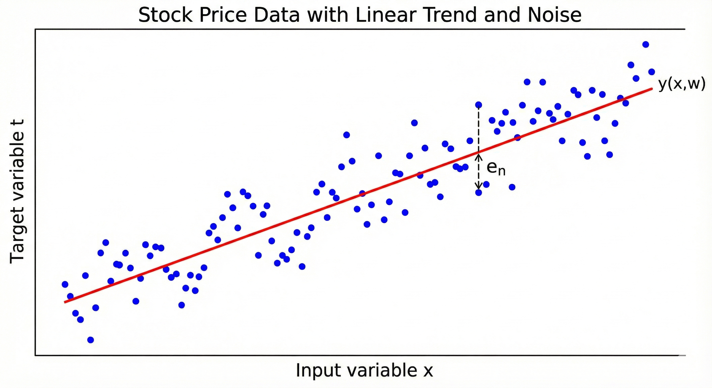

Chapter 1: Linear Models for Regression
This chapter mostly deals with linear models for regression and their basis functions (a fancy way of saying function on 'x'). This equation will come up a lot: \[ y(x) = w_0 + \sum_{i=1}^N w_i\,\phi\!\left({x}\right)\quad (1.1) \] where 'N' is the total number of features and w_i is the weight associated to the i_th feature.
Problem 1.1
Context

Question
Show that the 'tanh' and the logistic sigmoid functions are related by:
\[ \tanh(a) = 2\,\sigma(2a) - 1 \]Hence show that a general linear combination of logistic sigmoid functions of the form:
\[ y(x,w) = w_0 + \sum_{j=1}^M w_j\,\sigma\!\left(\frac{x-\mu_j}{s}\right) \quad (1.101) \]is equivalent to a linear combination of \(\tanh\) functions of the form:
\[ y(x,u) = u_0 + \sum_{j=1}^M u_j\,\tanh\!\left(\frac{x-\mu_j}{s}\right) \quad (1.102) \]and find expressions relating the new parameters \(\{u_j\}\) to the original parameters \(\{w_j\}\).
Solution:
We know that the logistic function:
\[ \sigma(a) = \frac{1}{1 + e^{-a}} \]and the RHS can be written as
\[ 2 . \frac{1}{1 + e^{-2a}} - 1 => \frac{2e^{2a}}{1 + e^{2a}} - 1 \]solving the above equation gives us
\[ \frac{e^{2a} - 1}{e^{2a} + 1} \]which is nothing but \(\tanh(a)\) (a different form though)
We can rewrite the relationship as:
\[ \sigma(a) = \frac{\tanh\left(\frac{a}{2}\right) + 1}{2} \]Substitute this relation into equation (1.101):
\[ \begin{aligned} y(x,w) &= w_0 + \sum_{j=1}^M w_j\,\sigma\!\left(\frac{x-\mu_j}{s}\right) \\ &= w_0 + \sum_{j=1}^M w_j\cdot\frac{1}{2}\left[\tanh\!\left(\frac{x-\mu_j}{2s}\right) + 1\right] \\ &= \left(w_0 + \frac{1}{2}\sum_{j=1}^M w_j\right) + \sum_{j=1}^M \frac{w_j}{2}\,\tanh\!\left(\frac{x-\mu_j}{2s}\right) \end{aligned} \]which aligns to eqn (1.102) (not sure if there's a printing mistake but you get the idea)
Problem 1.2
Context
The above graph represents a real life scenario where there's always a noise associated with the target variable. This can be generalised by the below equation:
\[ t = y(x, \mathbf{w}) + \epsilon \]where \(\epsilon\) represents the Gaussian noise.
In order to learn the spread or uncertainity (as \(y(x, \mathbf{w})\) will just predict a value but we're more interested in the distribution), we'll calculate the probability of the target variable given the input and parameters.
\[ p(t_n|x_n, \mathbf{w}, \beta) = \mathcal{N}(t_n|y(x_n, \mathbf{w}), \beta^{-1}) \]where \(\beta\) is the precision (inverse of the variance) of the Gaussian noise.
Now assuming all the data points are independent,
\[ p(\mathbf{t}|\mathbf{X}, \mathbf{w}, \beta) = \prod_{n=1}^{N} \mathcal{N}(t_n|y(x_n, \mathbf{w}), \beta^{-1}) \]where \(\mathbf{t}\) is the column vector representing the target values for all data points.
Taking the logarithm of the likelihood function, we get the log-likelihood:
\[ \ln p(\mathbf{t}|\mathbf{X}, \mathbf{w}, \beta) = \frac{N}{2}\ln \beta - \frac{N}{2}\ln(2\pi) - \beta E_D(\mathbf{w}) \quad \]where \(E_D(\mathbf{w})\) is the sum-of-squares error function defined as:
\[ E_D(\mathbf{w}) = \frac{1}{2}\sum_{n=1}^{N} \left\{ t_n - \mathbf{w}^T \phi(\mathbf{x}_n) \right\}^2 \]Maximizing the log-likelihood is equivalent to minimizing the sum-of-squares error function. We take the gradient with respect to \(\mathbf{w}\):
\[ \nabla_{\mathbf{w}} \ln p = -\beta \nabla_{\mathbf{w}} \left( \frac{1}{2} \sum_{n=1}^{N} \{t_n - \mathbf{w}^T \phi(\mathbf{x}_n)\}^2 \right) = 0 \] \[ \sum_{n=1}^{N} \{t_n - \mathbf{w}^T \phi(\mathbf{x}_n)\} \phi(\mathbf{x}_n)^T = 0 \] \[\Rightarrow \sum_{n=1}^{N} t_n \phi(\mathbf{x}_n)^T = \sum_{n=1}^{N} \phi(\mathbf{x}_n) \phi(\mathbf{x}_n)^T \mathbf{w} \] \[\Rightarrow \Phi^T \mathbf{t} = \Phi^T \Phi \mathbf{w} \] \[\Rightarrow \mathbf{w} = (\Phi^T \Phi)^{-1} \Phi^T \mathbf{t} \]Question
Show that the matrix \[ H = \Phi(\Phi^{T}\Phi)^{-1}\Phi^{T} \tag{1.103} \] takes any vector \( \mathbf{v} \) and projects it onto the space spanned by the columns of \( \Phi \). Use this result to show that the least-squares solution \[ \mathbf{y} = \Phi\mathbf{w}_{\text{LS}} = \Phi(\Phi^{T}\Phi)^{-1}\Phi^{T}\mathbf{t} \ \] corresponds to an orthogonal projection of the vector \( \mathbf{t} \) onto the manifold \( \mathcal{S} \).
Solution:
Let's define our matrix as \(H\) (the Hat Matrix). If we multiply it by any arbitrary vector \(\mathbf{v}\):
\[ \mathbf{u} = H\mathbf{v} = \Phi \underbrace{\left[ (\Phi^T\Phi)^{-1}\Phi^T \mathbf{v} \right]}_{\text{some vector } \mathbf{a}} \]The result \(\mathbf{u}\) is equal to \(\Phi \mathbf{a}\). By definition, any vector \(\Phi \mathbf{a}\) is a linear combination of the columns of \(\Phi\). Therefore, \(H\) maps any vector into the column space of \(\Phi\).
The least squares prediction is \(\mathbf{y} = H\mathbf{t}\). The residual (error) vector is:
\[ \mathbf{r} = \mathbf{t} - \mathbf{y} = (I - H)\mathbf{t} \]For the projection to be orthogonal, the residual \(\mathbf{r}\) must be perpendicular to the subspace (the columns of \(\Phi\)). We check the dot product \(\Phi^T \mathbf{r}\):
\[ \begin{aligned} \Phi^T \mathbf{r} &= \Phi^T (\mathbf{t} - \Phi(\Phi^T\Phi)^{-1}\Phi^T \mathbf{t}) \\ &= \Phi^T \mathbf{t} - (\Phi^T\Phi)(\Phi^T\Phi)^{-1}\Phi^T \mathbf{t} \\ &= \Phi^T \mathbf{t} - I \cdot \Phi^T \mathbf{t} \\ &= 0 \end{aligned} \]Since the dot product is zero, the residual is orthogonal to the column space.